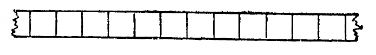

1.1 «Внешний вид» машины Поста.
Прежде всего
предупредим читателя, что машина Поста не есть реально существующее, сделанное
кем- то устройство; поэтому слова «внешний вид»
и взяты в кавычки. Машина Поста, как н ее близкий родственник машина Тьюринга,
представляет собой мысленную конструкцию, существующую лишь в нашем воображении
(хотя ее в принципе и можно было бы изготовить «в металле»). Именно это имеют в
виду, когда говорят о машинах Поста и Тьюринга, что они суть «абстрактные»
вычислительные машины. Однако для нас будет несущественным, что машины Поста на
самом деле нет. Напротив, мы будем предполагать ее «как бы существующей» - для
наглядности. И подобно тому, как можно выучиться считать на счетах или на
логарифмической линейке, не имея перед собой этих приборов, а пользуясь лишь их
описаниями и представляя их себе мысленно, так же и мы научимся вычислять на
машине Поста, прилагая наше воображение к тому ее описанию, которое сейчас будет
дано. Машина Поста состоит из ленты и каретки (называемой также считывающей и
записывающей головкой).
Лента бесконечна и разделена на секции одинакового размера; для наглядности ленту будем считать расположенной горизонтально (рис. 1). Бесконечность ленты находится в противоречии со сделанным выше утверждением, что машину Поста можно было бы в принципе построить. Дело в том, что мы объявили ленту бесконечной лишь для простоты изложения. С тем же успехом можно было бы предположить, что лента не бесконечная, а лишь неограниченно

Рис 1. Лента машины Поста разделена на секции и неограниченно простирается влево и вправо
растущая в обе стороны: например, можно было бы считать, что лента наращивается на одну секцию, как только каретка доходит до конца ленты и должна двигаться дальше (о движении каретки смотри ниже), или считать, что за каждую единицу времени слева и справа нарастает по одной секции. Нам, однако, будет удобнее считать, что все секции слева и справа уже наросли, и тем самым, хотя и в ущерб реальности, полагать ленту бесконечной в обе стороны. Порядок, в котором расположены секции ленты, подобен порядку, в котором расположены все целые числа. Поэтому естественно ввести на ленте «целочисленную систему координат», занумеровав секции целыми числами ..., 3, -2, -1, 0, 1, 2, 3… (рис. 2).
Рис. 2
Рис. 3. В каждой секции ленты либо не
записано ничего, либо записана метка
одной секции ленты (рис. 4, а; на этом и следующих чертежах каретка изображена в виде зачерненного квадрата); говорят, что каретка обозревает эту секцию, или держит ее в поле зрения. Информация о том, какие секции пусты, а какие от мечены и где стоит каретка, образует состояние машины
Рис. 4. Когда каретка неподвижна, она
стоит против одной из секций ленты так, как показано на рис. а), а не так, как
показано на рис. б). Ситуация, изображенная на рис. 6), может возникнуть только
в процессе движения каретки
Поста. Таким образом, состояние машины слагается из состояния ленты и указания номера той секции, которую обозревает каретка. 3а единицу времени (которую мы будет называть шагом) каретка может сдвинуться на одну секцию влево или вправо. Кроме того, каретка может поставить (напечатать) или уничтожить (стереть) метку в той секции, против которой она стоит, а также распознать, стоит или нет метка в обозреваемой ею секции. Чем определяются действия каретки, а также, что значит «распознать» в применении к каретке, будет объяснено в § 3.